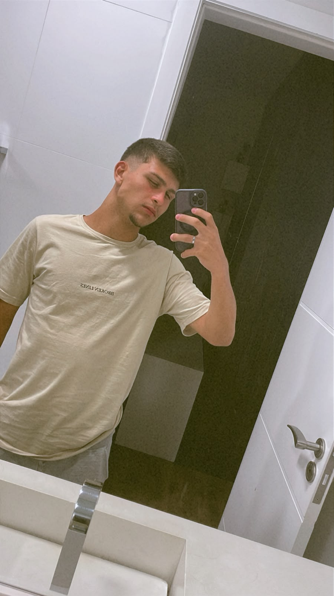

Construindo soluções digitais que resolvem problemas reais. Da vivência no comércio local à engenharia de softwares na nuvem.
Saiba maisMinha história, minha visão de mundo e o que me move.
Minha relação com a tecnologia começou de forma inesperada: debaixo do balcão da assistência técnica do meu pai. Passei anos atendendo clientes e vendo a rotina de um pequeno comércio, o que me deu uma visão muito prática das dificuldades de quem empreende no Brasil.
Foi ao perceber a dificuldade dele em gerenciar tudo em papéis que decidi aprender a programar. Hoje, curso Engenharia de Software e transformei essa vontade em ação criando a TechOS, minha empresa focada em desenvolver sistemas e sites acessíveis para pequenos negócios.
Atualmente, atuo na área de logística do Mercado Livre, onde lido com processos e resolução de problemas. Sou autodidata, proativo e acredito que a melhor tecnologia é aquela que resolve a vida real de alguém.
Ferramentas que utilizo para construir meus sistemas.
Soluções que desenvolvi aplicando boas práticas.
Sistema completo de gestão de Ordens de Serviço para assistências técnicas. Conta com autenticação multi-empresa, painel de administrador, geração de PDFs e automação de avisos via WhatsApp.
Criação do site oficial da minha empresa de tecnologia. Projeto focado em UI/UX, performance, responsividade e conversão, com design moderno focado em vender soluções para comércios locais.
Minha experiência e formação acadêmica.
Desenvolvimento de um sistema ERP (SaaS) para gestão de assistências técnicas, atuando no back-end em Python/Flask, banco de dados relacional e integração com API do WhatsApp.
Atuação na operação logística com foco em análise de processos e utilização de sistemas internos.
Organização de fluxos de informação e suporte à comunicação com parceiros e vendedores.
Atendimento direto ao cliente e gestão de caixa. Vivência que inspirou a criação de soluções tecnológicas para o setor.